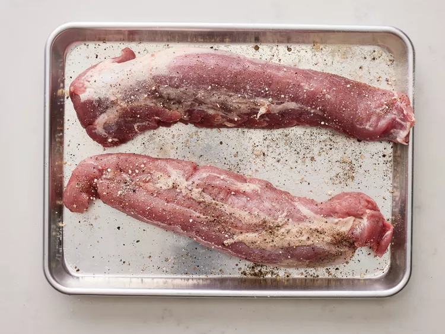

Ready to learn how to cook pork tenderloin on the grill? You'll find a detailed ingredient list and step-by-step instructions in the recipe below, but let's go over the basics:
The pork tenderloin is simply seasoned with garlic powder, salt, and black pepper before grilling. While grilling, the pork is basted with barbecue sauce.
Here’s a brief overview of what you can expect when you cook pork tenderloin on the grill:
On a grill preheated to medium heat, the pork tenderloin should be fully cooked after about 30 minutes over indirect heat. You'll know the pork is done when an instant read thermometer inserted into the center reads at least 145 degrees F.
Store leftover grilled pork tenderloin in an airtight container in the refrigerator for up to three days. Reheat the pork in the oven or microwave until warmed through.
Yes, you can freeze leftover grilled pork tenderloin for up to three months. Thaw in the refrigerator overnight before reheating in the oven or in the microwave.
Gather all ingredients.
Preheat an outdoor grill for medium, indirect heat and lightly oil the grate.
Season tenderloins with garlic powder, salt, and pepper. Place 1/2 of the barbecue sauce into a small bowl for basting; set aside remaining barbecue sauce for serving.
Cook pork on the preheated grill over indirect heat for 30 minutes.
Brush pork with barbecue sauce, turn, and brush again, using all sauce in the small bowl. Continue cooking until an instant-read thermometer inserted into the center reads 145 degrees F (63 degrees C), about 15 more minutes. Let pork rest for 10 minutes.
Slice pork and serve with reserved barbecue sauce.